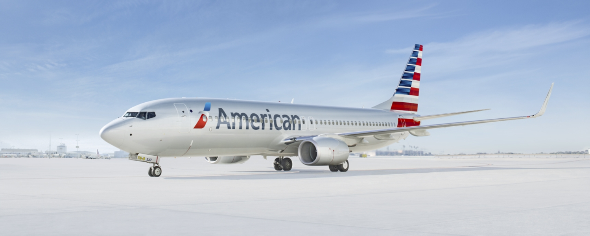

August 13, 2026
Airline NewsAmerican Airlines Added Two New Canadian Routes. Here Is Who They Are Really For.

While most of the travel headlines this summer have been about Canadians staying home from the United States, American Airlines went the other way and put two new seasonal routes on the map, both feeding its New York JFK hub from Calgary and Quebec City. On paper it looks like a bet on cross-border demand. Look closer and it is a bet on almost the opposite.
Header Image Source: American Airlines
The New Routes
American launched daily service between Quebec City Jean Lesage International and JFK on August 5, flown with a 76-seat Embraer 175. It is the only US carrier offering a nonstop on that city pair, and the route faces no direct competition, although United Airlines flies multiple times per day into nearby Newark Airport (EWR).
The airline has it running through October 12, so this is a short seasonal window rather than a year-round addition.
Calgary followed on August 6. That route operates three times a week, on Tuesdays, Thursdays and Sundays, on a 172-seat Boeing 737 MAX 8, and it is scheduled through October 4. It is the first time any US airline has flown nonstop between JFK and Calgary. Note that WestJet currently flies the pair into JFK, and Air Canada flew it briefly in the late 2000s before pulling out, although Air Canada still flies daily into Newark Airport (EWR).
Both routes plug into American's existing Canadian network, which already connects Calgary and Quebec City to hubs like Chicago, Charlotte, Dallas Fort Worth and Philadelphia. And both feed JFK, where American runs more than 600 weekly flights to over 40 destinations, including long-haul options like Edinburgh, Buenos Aires, São Paulo and New Delhi.
The Backdrop: Where Canadians Are Flying Now
Here is the part that makes the timing interesting. Canadian air travel to the United States has not recovered. Statistics Canada counted more return trips from the US in July overall, up double digits year over year, but that increase came entirely from cars. Air travel actually slipped again, and it is now the lowest of the past three Julys. Measured against 2024, before the pullback, Canadian air trips to the US are down more than a quarter.
Canadians have not stopped flying. They are choosing other destinations. Return flights from overseas in July came in higher than they were two years ago, even as flights back from the US kept falling. That demand is pointed at Europe, Asia and the sun, not at American connections, which tracks with what airlines have been doing lately: trimming Canada to US routes while adding international ones.
If Canadians are the ones cooling on the US, why would an American carrier add capacity into that market?
My Thoughts
Because the flights are not really aimed at Canadians flying south. They are aimed at the traffic moving the other way, and at feeding American's global hub.
American said as much in how it pitched the Calgary route. The airline framed it around making it easier for travellers across its network to reach Alberta, Banff and the Rockies, and around giving Calgarians a connection through JFK to Europe and beyond. That is a route sold in both directions, with the inbound and connecting story doing most of the work. Quebec City, with its walkable old town and European feel, is an easy sell to the same American leisure traveller.
The numbers line up with that read. American's total capacity between the US and Canada this year is essentially flat, up a fraction of a percent, and it sits fifth among carriers on cross-border routes. This is not an airline flooding Canada with seats. It is an airline placing two small, seasonal bets on specific leisure markets while the broader picture holds steady.
And the money favours the northbound traveller right now. The Canadian dollar has been hovering around 70 US cents, well off where it started the year. For an American deciding between a domestic trip and a week in the Rockies or Quebec City, the exchange rate quietly makes Canada the better deal. Statistics Canada has US visits to Canada climbing for six straight months, so this is not a hunch. It is already showing up in the data.
Put together, the story is not "cross-border travel is back." It is that a weak loonie, steady American interest in Canadian leisure, and American's need to keep JFK fed all point the same way, and none of it depends on Canadians booking flights to the US.
The Bottom Line
If you are in Calgary or Quebec City, the practical win here is the connection. A nonstop into JFK opens up American's long-haul network without a domestic hop first, which is worth knowing if you are eyeing Europe or South America this fall. That window is short, though. Both routes are seasonal and wind down in October, so this is a book-it-while-it-lasts situation rather than a permanent option.
The bigger takeaway is what the route map is telling us. Airlines vote with their aircraft, and American's vote is that the opportunity in Canada right now is inbound, not outbound. For a while yet, the interesting cross-border travel story may be the Americans coming to us.
Happy travels!